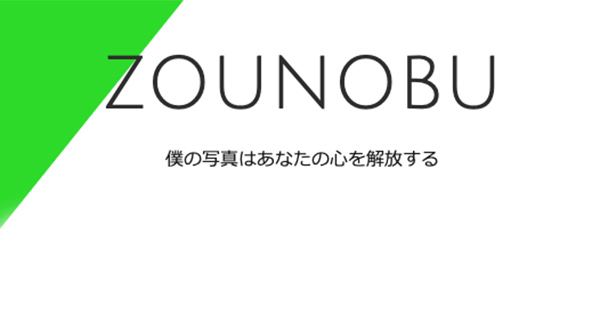

profileプロフィール
-
Engineer
@hakushuio.1983 兵庫県生まれ2005.4-2011.10 美容師2011.11-2015.10 フリーランスの美容師とECサイト運営を兼務2015.11-2017.9 株式会社ビットエー在籍2016.3-2017.9 新卒就活サイト案件に参画2017.10 個人事業開業2017.10- 人材採用系の開発業務を受託中
works制作実績
-
KamiCame | Scenery made of white and black
Scenery made of white and black.The everyday life expressed in white and black makes the photograph interesting.
kamicame.com -
『ルナ・エ・ソル』吉祥寺井の頭公園、ジブリの森のそばの美容室
吉祥寺井の頭公園、ジブリの森のそばのプライベートサロンです。髪のダメージを限りなく０に。カットはカウンセリングをおこないオーダーメイド、ヘアケアにこだわり理想のデザインと髪質を表現させていただきます。髪に触れたとき違いを感じれると思います。
luna-sol.tokyo/info - 
ZOUNOBU | 僕の写真はあなたの心を解放する
フォトグラファー都築 宣久（ツヅキ ノブヒサ）のオフィシャルウェブサイトです。 | This site is portfolio of Photographer ”Nobuhisa Tsuduki”
zounobu.com/ -
Earth Heart Circle | アースハートサークル
EHCはどなたでも参加いただけるサークルです。美しい心の中に身を投じれば美しい心が必ず芽生え、そしてその心がまた新しい美しい心を作りつないでゆくのだと私は想います。
ehc.jpn.com -
lian. ｜ 落ちつける空間創りを大切に、お客様のライフスタイルに合わせたスタイルを心がけています。
千葉県館山市に新しくオープンするプライベートサロン「lian.」のご紹介
lian-tateyama.com -
光蓮寺山のご紹介
岐阜県各務原市鵜沼大安寺町にある光蓮寺山。祈祷・霊能者 南雲龍人の紹介
kourenjisan.web.fc2.com -
あかバッチのあれ
ライカなんて高嶺の花。ぼくは国産のカメラで十分だと言っていたはずなのに、気づけばライカを手に取っている。ライカのデジカメなんて邪道だと言っていたはずなのに、気づけばこれくださいと言っている。そんなことにならないための正しいライカのはじめかた。素直になりましょう。
redbadge.me -
Prism Lab KICHIJOJI - 株式会社 Sun-Prism
フィルム写真を中心に現像やプリント、データ作成、写真展示や作家紹介など、写真にまつわる事を皆様と一緒に作り上げるラボです。
sun-prism.net